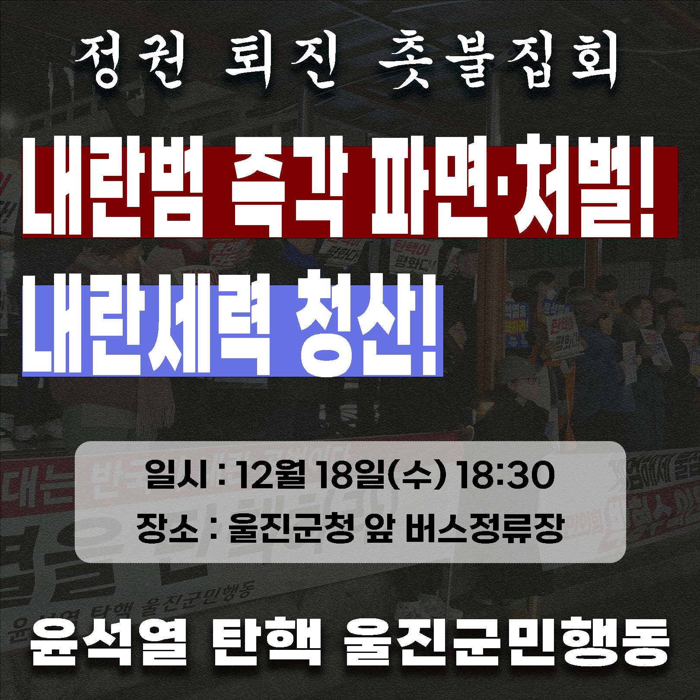
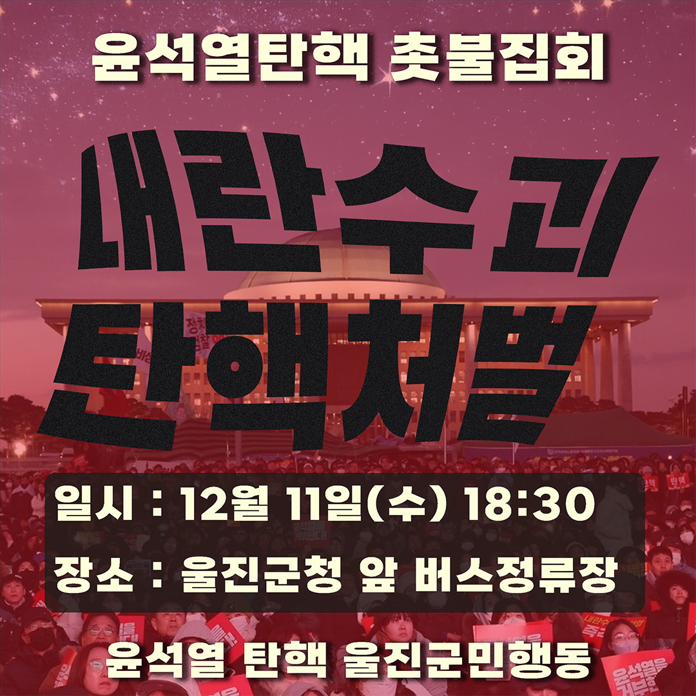

승리 선언 및 사회대개혁을 위한 성명서
파면은 끝이 아닌 시작이다!
사회대개혁을 위한 발걸음은 우리 삶의 터, 울진에서부터 시작된다.
2024년 12월 3일, 윤석열은 헌법을 유린하며 비상계엄을 선포했다. 그리고 3개월을 꽉 채운, 오늘 2025년 4월 4일, 마침내 윤석열이 탄핵되어 대통령직에서 파면되었다. 전국 곳곳에서 그리고 이곳 울진에서도 시민들은 멈추지 않고 윤석열 파면을 외쳐왔다. 그러나 비상계엄이 민주주의 위기의 시작이 아니었듯, 파면이 우리의 싸움의 끝일 수 없다. 이제 우리는 사회대개혁이라는 더 큰 과제를 향해 더욱 힘차게 나아갈 것이다.
민주공화정을 부정하고 파괴하는 세력을 단호히 청산하자!
12.3 비상계엄으로 초래한 정치적 혼란의 가장 큰 책임은 윤석열에게 있다. 하지만 절차적 시비를 일삼으며 탄핵을 지연시킨 국민의힘, 헌법재판관 임명을 거부했던 권한대행들, 내란에 동조하고도 반성하지 않는 정부 각료들, 체포를 방해한 경호처와 구속을 취소한 검찰 등 내란의 시간을 지속시킨 누구도 책임을 피할 수 없다. 우리는 민주공화정을 부정하고 파괴하는 세력을 단호히 청산할 것이다.
윤석열은 비상계엄을 선포하며 자신에 반대하는 사람들을 ‘반국가세력’이라 규정하고, ‘일거에 척결하’겠다고 선언했다. 그러나 우리는 대화와 타협 그리고 설득이라는 민주주의의 기본 가치를 지키며, 정치권에서부터 일상까지 위협하는 분열과 갈등을 넘어설 것이다. 투표날에만 ‘선거권’을 통해 ‘주권자’가 되는 민주주의가 아니라, 정책의 대상이 정책 결정 과정에서도 더 많은 목소리를 보장받고 행사하는 민주주의를 만들어낼 것이다.
차별과 혐오의 정치를 끝내자!
윤석열 정권이 고조시켜 온 남북 간 군사적 긴장, 노동자·장애인·여성·성소수자 등 사회적 약자에 대한 혐오와 차별, 친일 역사 쿠데타, 언론 탄압, 기후위기와 불평등, 양극화 모두를 혁파해야 한다. 우리의 민주주의는 비상계엄이 선포되는 순간에만 위태로운 것이 아니다. 일상 속에서 차별과 혐오, 불평등과 배제가 지속되는 한 민주주의는 완성될 수 없다. 윤석열이 사라졌다고 해서 우리가 싸워야 할 모든 문제가 사라지는 것은 아니다. 우리는 차별과 혐오의 정치를 끝내고, 새로운 사회를 만들어갈 것이다. 두려움과 혐오가 아니라 연대와 평등의 원칙 아래에서 차별받는 자들의 삶을 바꾸는 것이야말로 진정한 사회대개혁의 출발점이다.
기후위기는 생명의 위기다. 지속가능한 미래를 만들자!
우리가 사는 울진은 인간뿐만 아니라 산양, 오소리, 담비 등 수많은 동물과 바다에 물살이 그리고 식물이 함께 살아가는 생명의 터전이다. 하지만 지금 우리는 기후위기라는 거대한 재앙과 마주하고 있다. 기후위기의 원인은 단순하지 않다. 산업 자본이 만들어낸 과잉 생산과 소비, 대기업 중심의 에너지 구조가 기후위기를 가속화하고 있다. 이 위기는 단지 기온의 상승에 그치는 것이 아니라, 폭염과 홍수, 가뭄과 산불, 식량과 물 부족 등 우리의 일상을 직접적으로 위협하고 있다.
이런 상황에서 정부와 기업은 핵발전을 기후위기의 대안으로 포장해 왔다. 하지만 핵발전은 중앙집중적 에너지 구조를 고착화하여 지역을 희생시키고, 재생에너지 전환을 가로막는다. 또한 방사능 폐기물은 수만 년 동안 미래 세대를 위협할 것이고, 사고 한 번이면 모든 생명이 돌이킬 수 없는 피해를 입는다.
진짜 기후위기 대응은 지속 가능한 에너지를 확대하고, 지역이 직접 에너지를 통제하며, 성장 중심의 체제를 넘어서 지속 가능성을 중심에 두는 전환에서 시작해야 한다. 우리는 핵발전소 확장이 아니라, 태양광·풍력·소수력 같은 재생에너지 확대, 에너지 자립, 지역 공동체 중심의 전환을 요구한다. 기후위기는 단지 기술로 해결할 문제가 아니다. 이제는 우리의 삶의 방식 자체를 바꿔야 할 때다. 울진에서부터, 우리가 직접 변화의 주체가 되어 지속 가능한 미래를 만들어 갈 것이다.
지역을 지우는 정치, 지역에서 바꾸는 미래
울진을 비롯한 많은 지역이 소멸의 위기에 처해있다. 수도권 중심의 개발과 정치가 지역을 철저히 배제한 결과다. 국가는 비수도권 지역을 희생양 삼아 핵발전소, 군사기지, 쓰레기 매립장 같은 위험시설을 떠넘기면서도, 정작 지역의 삶을 위한 기반은 마련하지 않았다. 지역 소멸은 단순한 인구 문제나 출생률의 문제가 아니다. 의료, 교통, 교육, 복지 등 기본적인 생활권이 붕괴되는 생존의 문제다. 지역에서 태어났다는 이유만으로 더 열악한 환경을 감내해야 하는 현실, 노동할 기회조차 주어지지 않는 현실이야말로 가장 뿌리 깊은 차별이다. 우리는 수도권과 비수도권 지역이 불평등하게 배치된 사회구조를 바꾸고, 지역의 사람들이 지역에서 존엄하게 살아갈 수 있도록 할 것이다.
이제 우리는 수도권에 의해 결정되는 중앙정치가 아니라, 지역에서부터 변화를 만들어갈 것이다. 지역의 노동자가, 농민이, 여성이, 청년이, 장애인이, 그리고 지금까지 목소리가 지워졌던 모든 이들이 정치의 주체가 될 것이다. 울진에서부터, 지역에서부터 우리의 힘으로 미래를 만들어 나갈 것이다.
2025. 4. 4.
윤석열탄핵 울진군민행동
공지 채널
인스타그램 : @yoonout_uljin후원 계좌
농협 351-1344-8936-23 최ㅇ희(윤석열탄핵울진군민행동)
집회 포스터
이전 포스터

뉴스 아카이브
집회와 관련된 기사와 울진 지역 매체의 계엄/탄핵과 관련된 기사를 정리합니다.
- 윤석열 대통령님 감사합니다/울진신문/2024.12.04.
- 울진군민행동, 윤석열을 탄핵하라/울진투데이/2024.12.07.
- '보수 심장' TK 울진서 울려퍼진 "윤석열 탄핵"/뉴스핌/2024.12.07.
- 경북 포항·경산·경주·안동·울진서도 ‘윤석열 퇴진’ 외침/뉴스민/2024.12.10.
- 울진군민행동, 윤석열을 탄핵하라/울진투데이/2024.12.11.
- 울진· 영덕 탄핵 촉구 집회 잇따라/포항MBC/2024.12.13.
- 울진서 ‘윤석열 대통령 탄핵’ 촉구 촛불집회 열려/대구일보/2024.12.12.
- "윤석열 탄핵·국민의힘 탄핵동참 하라"...압박거세지는 TK/뉴스핌/2024.12.13.
- "헌재 윤석열 탄핵 인용 촉구" 울진 촛불집회/울진투데이/2024.12.18.